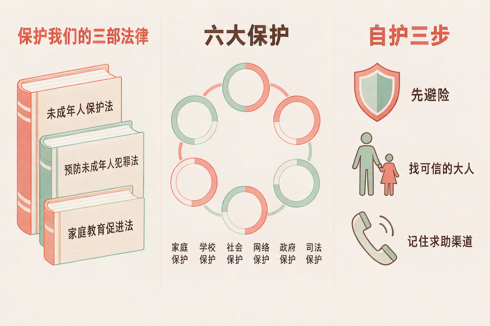
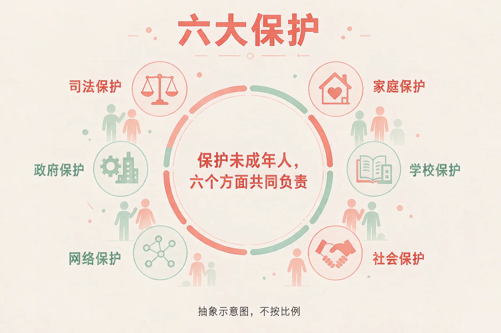
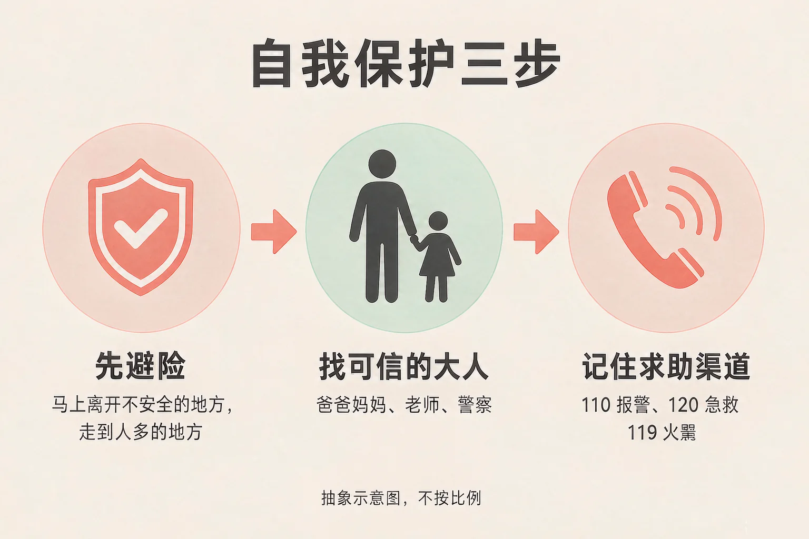

Gallery
v1.0.0 · skill v7.22.0
小学六年级 · 中华优秀传统文化
遇到危险的时候，第一步该做什么？

选一个你真正想知道的问题，后面的活动都会围着它转。
选择或输入后，这节课会围绕你的问题展开。
先凭直觉选一个，选完立刻看到解释——错了也没关系，正好知道要重点听哪里。
1. 下面哪一部法律的名称写得准确？
保护未成年人的基本法律，规范全称是《中华人民共和国未成年人保护法》。错因提醒：常见错误是把法律名称凭印象误认为成《未成年人保护条例》或者《青少年保护法》。法律名称要写全称，一个字都不能少。
2. 放学路上，你发现有个不认识的人一直跟着你。下面哪种做法最合适？
自我保护的第一步永远是先避险——离开不安全的地方，走到人多、有工作人员的地方，再及时告诉信任的大人。错因提醒：有的同学误认为自我保护就是自己想办法应付。这样可能会：把自己带到更没人能帮你的地方。还可以试试：先问自己「这里人多吗、哪里有人能帮我」。
3. 保护未成年人，是谁的责任？
保护未成年人是家庭保护、学校保护、社会保护、网络保护、政府保护、司法保护六个方面共同的责任。错因提醒：有的同学误认为保护未成年人只是家里的事或者只是学校的事，这样就看不到身边还有很多人和很多制度在守护我们。
为什么要学这一课？
我们每天都在长大，也天天听到「未成年人」这个词（And）；可到底有哪几部法律在保护我们、它们各自管什么，很多同学说不清（But）；所以这节课先把三部法律和它们的分工弄清楚（Therefore）。

我们享有的权利
法律保障未成年人享有生存权、发展权、受保护权、参与权等权利，并给予特殊、优先保护。正因为我们是未成年人，法律才格外多照看一层。
有的同学误认为保护未成年人只是家里的事；也有的同学把法律名称误认为成《未成年人保护条例》。其实规范全称是《中华人民共和国未成年人保护法》，六大保护缺一不可。
🔍 深层理解 换个角度再看一遍这件事，看看能不能说出背后的原理。
看见它：学校里的一节安全教育课、网上的一条内容限制、社区图书馆的一次免费开放，背后都有一部法律在起作用。
解释它：为什么法律要给我们「特殊、优先保护」？因为未成年人还在成长，遇到事情时不一定有足够的力量和办法保护自己，所以法律要先把我们护在里面。
迁移它：这就像过马路时大人会牵住你的手：不是因为你做错了什么，而是因为这一段路需要多一层照看。等你长大了，也要记得回过头照看更小的人。
挑一个处境，然后一步步走：先避险 → 找可信的大人 → 记住求助渠道。每一步选一个你认为最合适的做法，选对了才能走下一步。
先点一个处境。
为什么要学这一课？
我们已经知道法律在保护我们（And）；可真遇到事情的那一刻，很多同学反而不知道该先做什么（But）；所以这节课把自我保护的三步固定下来，练成能立刻用出来的办法（Therefore）。

知法守法，依法维权
知道法律的规定，才能更好地保护自己，也不会因为不懂而做错事。不做法律禁止的事；有了不良行为要及时改正。合法权益受到侵害时，可以请家长、老师帮助，依法维护自己的权益。
有的同学误认为自我保护就是自己冲上去跟对方较量；也有的同学误认为把遇到的事说出来很丢人。其实第一步永远是先避险，及时告诉信任的大人正是最管用的办法。
🔍 深层理解 换个角度再看一遍这件事，看看能不能说出背后的原理。
看见它：同样一件事，做法的顺序一变，结果就不同：先走到人多的地方、再告诉大人、最后拨打 110，这三步是有先后的。
解释它：为什么「先避险」要排在第一位？因为只有自己安全了，才有机会去告诉大人、去用求助渠道。顺序颠倒，后面的办法就都用不上了。
迁移它：这套顺序在其他时候也用得上：闻到家里有煤气味，先离开、再喊大人、最后打电话；遇到身体不舒服，先停下来、再告诉老师、最后联系家长。
挑一个身边做法，判断它属于家庭保护、学校保护、社会保护、网络保护、政府保护、司法保护里的哪一类。选完马上看到解释。
先点一个做法。
情境：班会课上，几位同学写了五条关于法律保护的说明。请你当一次校对员，判断哪一条准确、哪一条必须改。
有的同学把「自我保护」误认为「自己冲上去解决」，一遇到事情就想硬碰硬；也有的同学把法律名称搞混，凭印象写成《未成年人保护条例》。记住：第一步永远是先避险，法律名称要写规范全称。
先凭直觉选一个，选完立刻看到解释——错了也没关系，正好知道要重点听哪里。
1. 关于保护我们的法律，下面哪句话说得准确？
三部法律各有分工：未成年人保护法保障未成年人合法权益，预防未成年人犯罪法重在预防，家庭教育促进法明确父母或者其他监护人负责实施家庭教育。错因提醒：常见错误是把三部法律的作用搞混，或者误认为一部法律就够了。
2. 有同学说：「自我保护就是自己想办法把对方制服。」下面哪种说法更合适？
自我保护的三步是：先避险、找可信的大人、记住求助渠道，顺序不能颠倒。错因提醒：有的同学误认为自己冲上去才叫勇敢。这样可能会：让自己陷入更大的危险。还可以试试：把「先让自己安全」当成第一句口诀。
3. 关于 110、120、119 这三个号码，下面哪种说法准确？
110 报警、120 急救、119 火警，各有各的用处；遇到紧急情况，先让自己安全，再拨打对应的号码，把地址和情况说清楚。错因提醒：容易把三个号码搞混。还可以试试：和家人一起把三个号码念两遍，再说说分别在什么时候用。
三步各选一个：最想提前做好准备的处境 → 最要紧的第一步 → 要记牢的求助对象与渠道。选完，你就有了自己的自护卡。
从第一步开始选。
把它写下来：
用三句话写清楚：我最想提前做好准备的处境是……；这种情况下最要紧的第一步是……；我要记牢的求助对象和渠道是……。
先凭直觉选一个，选完立刻看到解释——错了也没关系，正好知道要重点听哪里。
1. 你一个人在家，有人敲门说自己是来检修水管的。下面哪一步最要紧？
一个人在家时，门就是最重要的一道保护。先不开门、不透露独自在家，再告诉信任的大人，必要时拨打 110 报警。错因提醒：有的同学误认为问清楚对方是谁再开门更稳妥。这样可能会：把危险请进家门。还可以试试：隔着门说一句「我现在不方便开门」，然后马上打电话给大人。
2. 上网时有人让你发照片、说出家里的情况，才肯送你礼物。下面哪种做法合适？
个人信息一旦发出去就很难收回，这很可能是陷阱。不发送、不点开链接、保存记录并告诉信任的大人，是最合适的做法。错因提醒：有的同学误认为发一张照片不会有事。这样可能会：把自己的信息交到不认识的人手里。还可以试试：把「先不发、先不点、告诉大人」当成上网的三条习惯。
3. 关于「六大保护」，下面哪句话说得准确？
家庭保护、学校保护、社会保护、网络保护、政府保护、司法保护，六个方面各有分工、共同负责。错因提醒：常见错误是误认为只要有一方面负责就够了。还可以试试：把六个方面各找一件身边的事对上去，看看它们是怎么一起起作用的。
一句口诀：先避险、找大人、记渠道；知法守法，依法维权。
给别人讲一遍：请用「先避险」和「求助渠道」这两个词，把自我保护的三步讲给家里人听，并说说 110、120、119 分别在什么时候用。
再动一动手：写一写三部法律的规范全称，再写出六大保护的名称，每一个都用一句话说明它在生活里是什么样子。
三层练习，做完第一、二层就算通关；第三层留给愿意继续探索的同学。
⭐ 基础巩固（必做）
⭐⭐ 能力应用（必做）
⭐⭐⭐ 迁移挑战（选做）
左边是学它之前要先会的，右边是学会之后可以继续探索的，下面是同一领域的伙伴知识。
图谱正在加载：首次进入需下载知识索引（约 1–3 秒），加载完成后本行会自动消失。